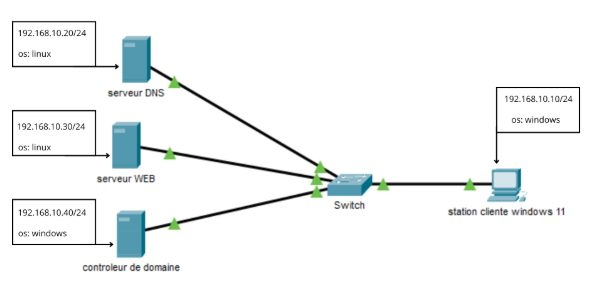
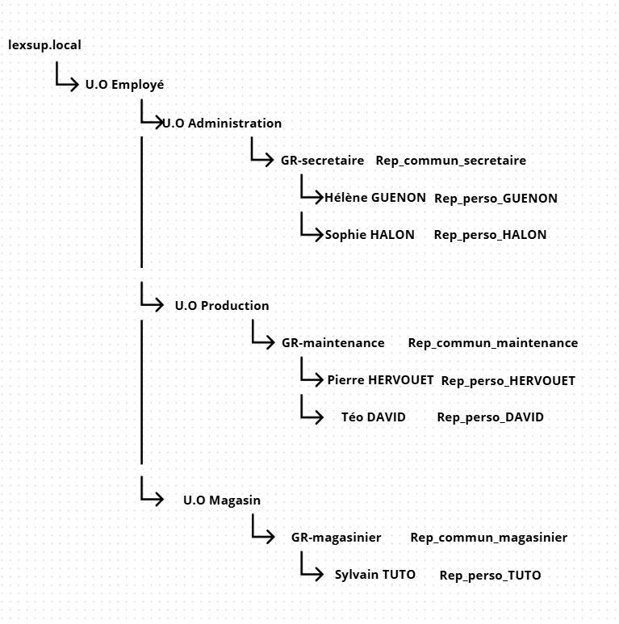
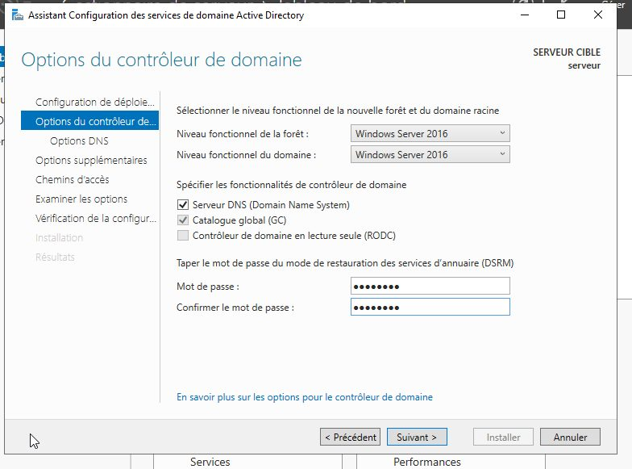
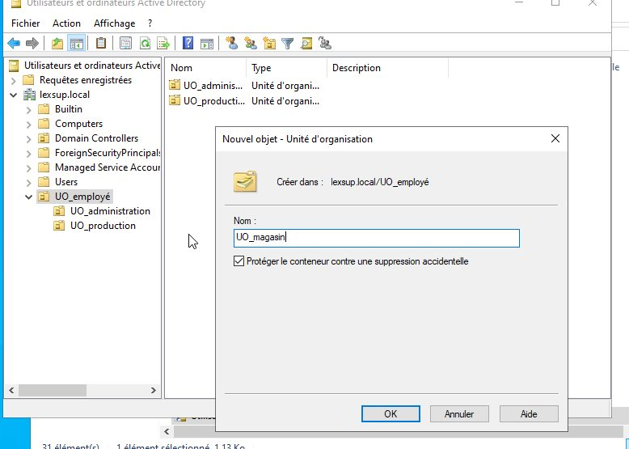
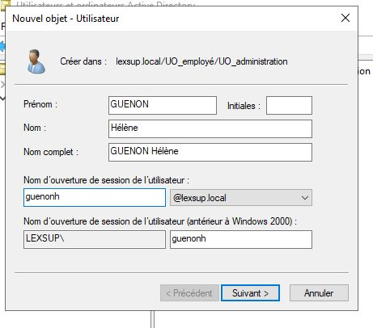
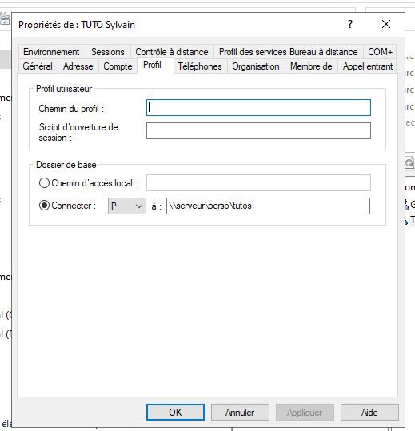
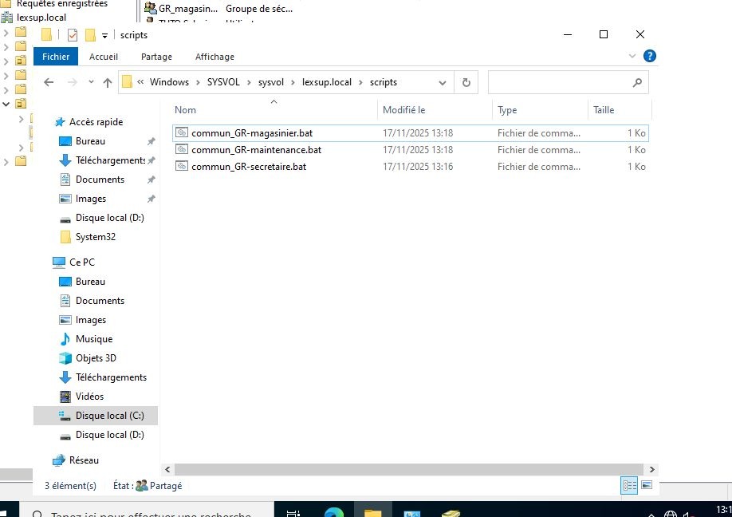
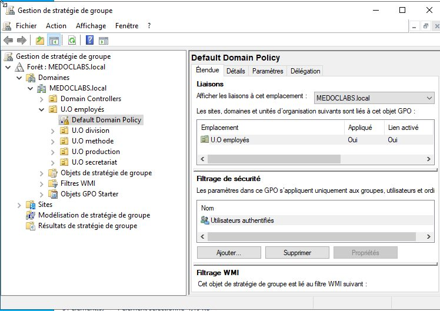
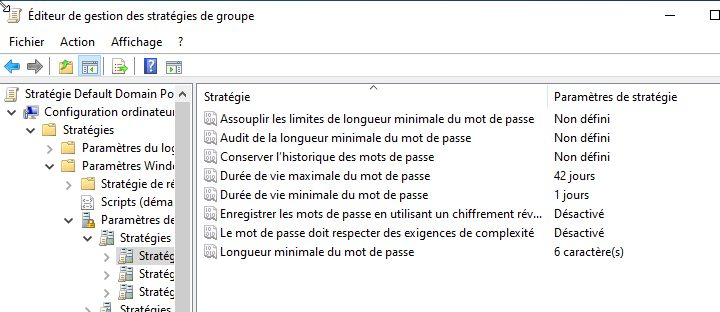

Contexte
Lexsup a besoin d'un réseau d'entreprise centralisé : chaque employé doit avoir un compte, retrouver ses documents personnels et accéder aux dossiers communs de son service, avec des règles de sécurité appliquées à tous.
Le livrable attendu est l'infrastructure fonctionnelle et un document technique qui permet de la comprendre et de la reproduire.
Plan réseau
Avant de configurer quoi que ce soit, j'ai réalisé un plan réseau. Il permet de visualiser l'infrastructure, de retrouver rapidement chaque machine et de configurer plus facilement ses interfaces.
Réalisation
Arborescence de l'annuaire
J'ai d'abord conçu l'arborescence : une unité d'organisation (UO) Employés, puis une UO par service. Chaque UO de service contient un groupe par métier, dans lequel sont placés les employés.
Configuration du serveur
- Renommage du serveur — un nom clair, réutilisé ensuite dans les scripts et les chemins des répertoires utilisateurs.
- Rôle AD DS — ajout des services de domaine Active Directory.
- Nouvelle forêt — création du domaine
lexsup.localet configuration du mot de passe. - Création de l'arborescence — UO et groupes, connecté en administrateur du domaine.
Utilisateurs et dossiers
- Comptes — chaque utilisateur créé dans l'UO de son service, ajouté à son groupe métier, avec un mot de passe provisoire.
- Répertoires personnels — un dossier par utilisateur, accessible à lui seul.
- Dossiers communs — un dossier par service, monté automatiquement par un script de connexion à l'ouverture de session.
Stratégie de groupe (GPO)
J'ai appliqué une GPO sur l'UO Employés pour imposer les restrictions de mot de passe à tous les comptes.
Tests
J'ai connecté un poste client au domaine, ouvert une session utilisateur et vérifié que le répertoire personnel et le dossier commun du service étaient bien montés.
Compétences mobilisées (bloc 1, épreuve E5)
Ces compétences sont reportées dans mon tableau de synthèse E5.
Preuves








